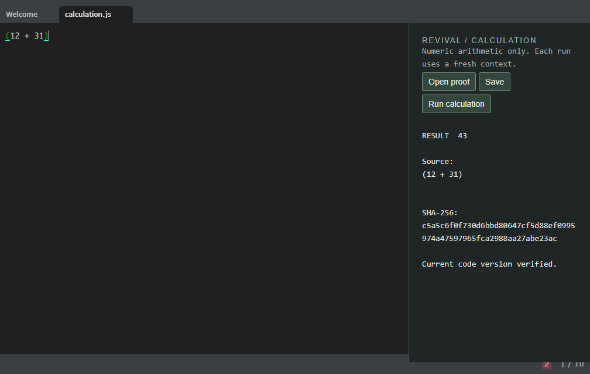

IN PROGRESS · EXPERIMENTAL
Light Table
An ambitious live-coding editor.
A second chance for an original idea.
Archived in 2022, Light Table connected code to immediate feedback. We're keeping its original ClojureScript foundation and repairing one real workflow first.
- Verified
- Original editor launches, opens a file, accepts edits and saves. Restricted JavaScript arithmetic shows 42, then 43 beside the code, tied to exact source hashes.
- Still on the Bench
- Language plugins, native menus and modern runtime support. This is a working proof, not a ready release.
